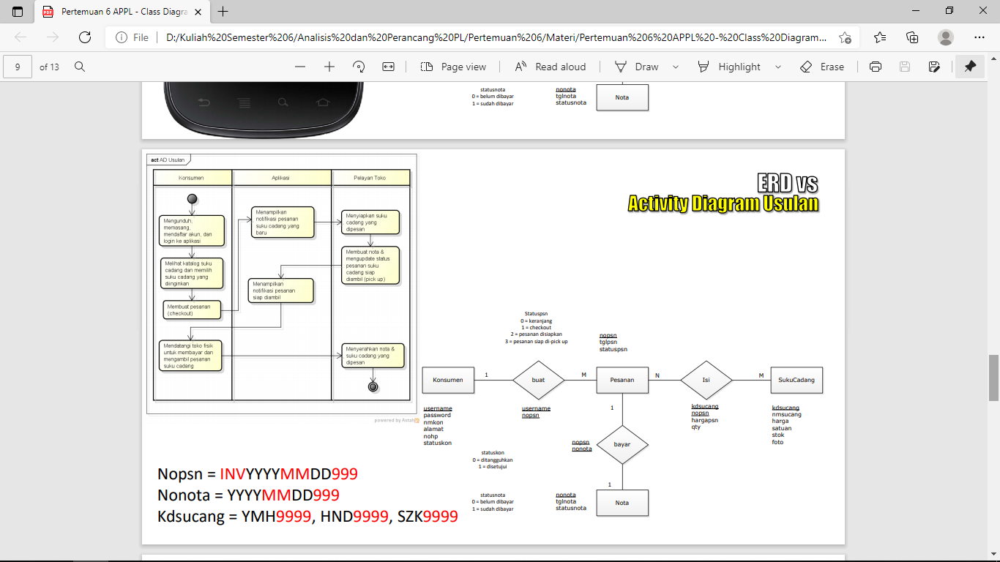

NIM : 1811500002
Nama : Dian Lesmana
Kelompok : TI6A
Hasil saya menyadur di pertemuan 6 :
- Perhitungan Nilai Kehadiran cukup membuat file index.html disetiap direktori pertemuan github (angka), Contoh 6 untuk pertemuan 6
- Membuat File README.MD yang berisikan Nim + Nama + Kelompok sebagai nilai kehadiran
- Mempelajari tentang Class Diagram
- Dosen mengingatkan tentang Kuliah Pengganti, dan mengingatkan tentang presentasi UAS untuk persiapan KP
- Mempelajari dan juga menganalisis Materi yang diberikan oleh Dosen di GCdownload

- Menyimak Penjelasan yang diberikan oleh dosenLink : https://www.youtube.com/watch?v=nNIQvf7OdrY

- Mempelajari dan mempraktekkan Latihan seperti yang telah diajarkan oleh Dosen Download File Astah download